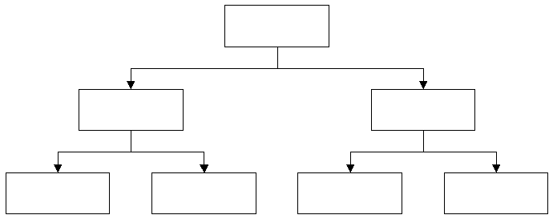
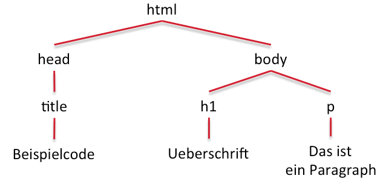
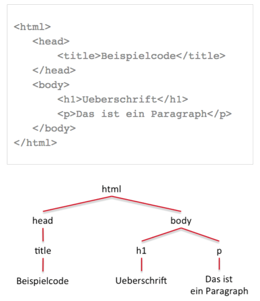

Document Object Model
Document Object Model
Das DOM beschreibt HTML-, SVG- oder XML-Dokumente. Es wird vom W3C, dem World Wide Web Consortium definiert.
Für Javascript ist das DOM der Standard für den Zugriff auf Tags, Attribute und Inhalte von HTML-Dokumenten.
Durch die Baumstruktur des DOMs, werden alle Elemente des Dokuments in Zusammenhang gesetzt. So kann Javascript von einem Element aus durch die Seite navigieren und Tags, Attribute und Inhalte einfügen, entfernen oder Bestehende verändern.
Der Baum
<html>
<head>
<title>Beispielcode</title>
</head>
<body>
<h1>Ueberschrift</h1>
<p>Das ist ein Paragraph</p>
</body>
</html>

Der DOM Baum besteht aus nodes (Knoten). Diese werden mit root, parent, child und sibling bezeichnet.
Die wichtigsten Befehle

- node.childNodes[ ] greift auf das Kind des aktuellen Knotens, auf das der angegebene Index verweist, zu.
- node.firstChild oder node.lastChild greifen auf das erste- oder letzte Kind des aktuellen Knotens zu.
- node.parentNode greift auf den Elternknoten des aktuellen Knotens zu.
- node.getElementByID( ) greift auf das Element mit der gesuchten ID zu.
- node.nodeName gibt den Namen des Knotens wieder (als String in Großbuchstaben).
- node.nodeValue gibt den Inhalt eines Textknotens oder den Wert eines Attributknotens wieder.
-
node.nodeType gibt des Typ des aktuellen Knotens wieder
- Element-node
- Attribute-node
- Text-node
Durch den Zusatz Element kann direkt nur auf Knoten des Typs Element zugegriffen werden. (Beispiel: node.firstElementChild greift auf das erste Kind vom Typ Element zu.)
Minidemo
Das ist ein Beispielbild.
Meine Quellen
- http://www.mediaevent.de/tutorial/css-positionieren-float.html
- https://developer.mozilla.org/en-US/docs/Web/API/Document_Object_Model
- http://www.mediaevent.de/javascript/DOM-Knoten-suchen.html
- http://www.quirksmode.org/dom/intro.html
- http://www.itwissen.info/definition/lexikon/document-object-model-DOM.html

Ende
/